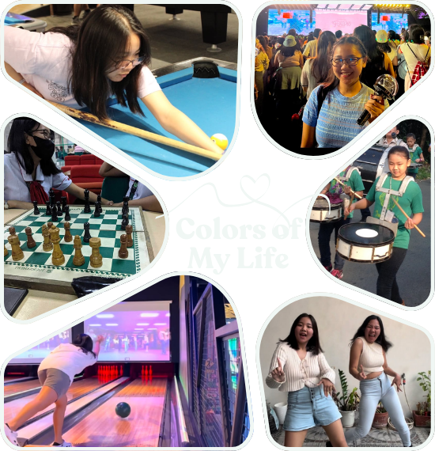
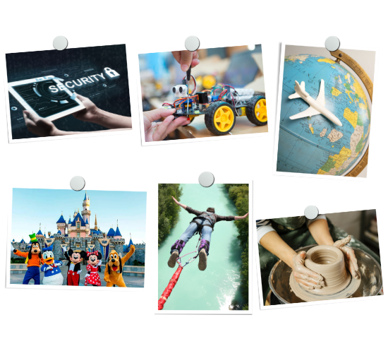

Composition of life
Jenilyn Chua
Skills, Hobbies, and Interests

Skills:
If there is one thing I have learned, it is that skills are not something you are just born with, you build them over time, little by little. I have always been drawn to technology, and while I am still figuring things out, I have taken my first steps into web design with HTML and CSS. There is just something satisfying about typing a few lines of code and watching them come to life on a webpage, even if it is just a simple layout. That moment of creation was what made me realize I wanted to learn more about web development. On the more creative side, I also enjoy graphic designing. Tools like Canva and Figma let me play around with colors, fonts, and layouts, and even though I am no professional, I enjoy making something visually appealing. And then there is programming. To be honest, when I first looked at Python, Java, and C#, I felt like I was staring at an alien language. But once I started learning, I realized it is like solving a really complicated riddle. It is frustrating at times, but rewarding when I finally crack it. Database management with MySQL is another skill I am developing, learning how to organize and manipulate data in ways that power the digital world around us. That said, I am still very much a beginner in all of this. There is so much to learn, and I know I am only scratching the surface. Of course, technical skills are only half the equation. Over time, I have developed soft skills that have shaped the way I learn, work, and connect with others. If there is one thing about me, it is that I have an almost obsessive attention to detail. I am the type of person who will spend way too much time fixing a formatting issue in a document, adjusting the alignment of a design pixel by pixel, or rechecking something to make sure it is just right. It is both a blessing and a curse. Sometimes I get so caught up in the details that I lose track of time, but I also know it is what makes my work thorough and polished. Beyond that, I believe in continuous learning, because the world keeps changing, and I refuse to sit still. This is especially true for technology, where things change so fast that you have to keep up or get left behind. I am a big believer in critical thinking, time management, and staying open-minded. There have been plenty of times when deadlines pile up, and stress starts creeping in. Life has thrown its fair share of challenges at me, but I like to think of them as opportunities to grow. I am determined, adaptable, and, above all, a team player. I know that success is not just about what I can do alone, it is about working with others, sharing ideas, and growing together. Every skill I develop, whether technical or personal, is like another instrument added to the orchestra of my life, creating a melody that is uniquely mine.

Hobbies:
If skills are the structure of my life, hobbies are the colors that make it vibrant. My love for movies, TV series, anime, and K-Dramas runs deep. Each story I watch takes me on a journey, allowing me to experience different lives, emotions, and cultures without ever leaving my room. Whether it is a heartwarming K-Drama, an action-packed anime, or a thriller that keeps me on edge, I lose myself in the storytelling and cinematography. Then there is dancing. I am not a professional or anything, but I love just moving to the music. Whether it is trying to learn choreography or just letting loose, it is something freeing for me. Music fuels me in more ways than one. My playlist is a mix of K-pop, EDM, and Pop, each song reflecting different moods and moments in my life. Sometimes, I blast energetic beats to keep me going, while other times, I sink into slow ballads when I need comfort. I also love sports, but in a more laid-back, "let's have fun" way. Whether it is badminton, table tennis, bowling, or billiards, I enjoy the friendly competition and the laughs that come with it. Winning is nice, but honestly, the real fun is in the moments between those ridiculous misses, the unexpected trick shots, and the inside jokes that come out of every game. On a more artistic note, I have always been drawn to playing musical instruments and getting lost in the sound of a song I am learning. Board games bring out my competitive yet strategic side, especially the ones that require strategy and maybe a little bit of deception just to enjoy the chaos of it all. But when I am not immersed in music, sports, or games, I find joy in cooking and baking. Sharing good food with people is such a satisfying experience. Whether it is a home cooked meal or a batch of cookies fresh from the oven, I love seeing the happiness on people’s faces when they take a bite. And for the child in me, building LEGOs and block structures is a hobby that never gets old. It is nostalgic and almost meditative snapping pieces together and watching something take shape. My hobbies are my escape, my way of unwinding, and my source of endless joy.

Interests:
If my hobbies are what make me happy, my interests are what make me excited for the future. Cybersecurity is something I have been really curious about lately. The idea of protecting digital spaces, figuring out vulnerabilities, and stopping cyber threats. Like a high-tech detective game, and I would love to dive deeper into it. Robotics is another area I want to explore. Designing and programming machines that can actually interact with the world is really interesting. But as much as I love technology, I do not want to just live in front of a screen. I want to see the world. Traveling internationally is one of my biggest dreams. I want to experience different cultures, try new foods, and see places I have only watched about. And yes, visiting every Disneyland and Universal Studios is absolutely on my bucket list. I want to see the magic of theme parks, a place where reality fades and childhood dreams come to life, and I want to experience that magic in different parts of the world. But beyond sightseeing, I crave adventure. I want to push my limits with adventure sports. Skydiving, bungee jumping, paragliding, scuba diving, jet skiing, basically anything that gives that rush of adrenaline. And then there are my more hands-on creative interests, I have always wanted to learn pottery and knitting. And lastly, I want to learn and speak different foreign languages. Language is such a powerful way to connect with people, and I love the idea of breaking down barriers and truly understanding different cultures through their words. At the end of the day, I do not just want to live life passively. I want to experience everything, learn as much as I can, and chase after the things that make me feel alive. My interests might be all over the place, but that is just who I am, a curious, adventurous, and always ready for the next thing kind of girl.